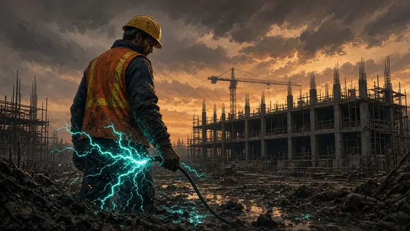
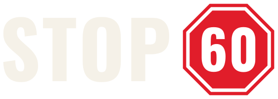
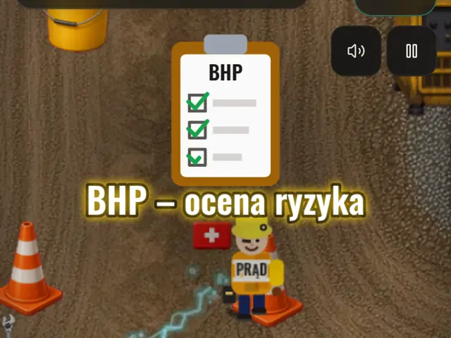
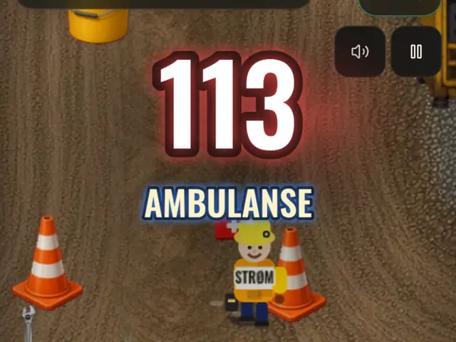
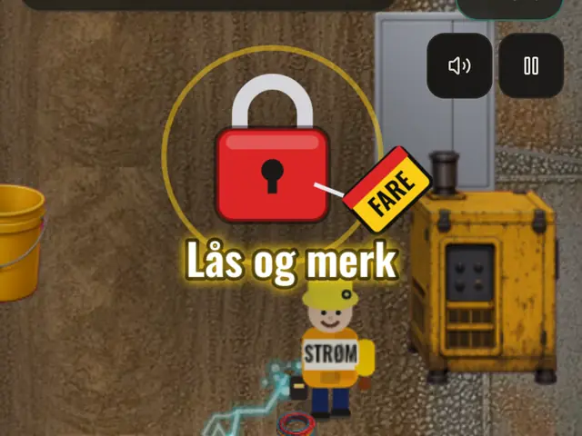
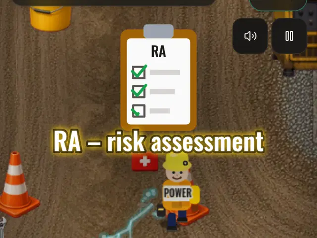

Stop. Pomyśl. Pracuj bezpiecznie – 60 sekund.
Gra wspierająca bezpieczeństwo i higienę pracy na budowie.
Misja
Krótka gra o bezpiecznej pracy
Stop60 to seria krótkich gier na telefon o pracy w miejscach, gdzie zasady BHP są ważną częścią bezpiecznej pracy. Gra ma na celu przypominać o tych zasadach przez krótkie hasła i informacje pokazywane w trakcie gry. Może pomóc podnieść świadomość zagrożeń w pracy, ale nie zastępuje szkolenia BHP ani instrukcji na stanowisku pracy.
Co to jest
Jak gra wspiera BHP
Krótkie przypomnienia
Każda 60-sekundowa runda pokazuje 3–4 krótkie hasła BHP.
Dla każdej branży
Cieśla, elektryk, hydraulik, operator maszyn, praktykant – hasła dotyczą wszystkich na budowie.
Szybka powtórka
Minuta przed pracą lub po niej, albo w przerwie.
Początek rozmowy
Zagrajcie rundę na odprawie lub porannym spotkaniu i porozmawiajcie o hasłach.
Przykłady z gry:
- Masz wątpliwość? Stop
- Zablokuj i oznacz
- Zmierz, zanim dotkniesz
- BHP – środki ochrony
- Zgłoś zdarzenie
Stop60 nie zastępuje szkolenia BHP ani procedur Twojej firmy.
Zobacz, jak to wygląda
Prawdziwe nagrania z gry
Krótkie nagrania z prawdziwych rund na telefonie: ruch na budowie, zabiegani koledzy, hasło BHP, które się pojawia – i karta końcowa po 60 sekundach. Bez dźwięku.
Hasła BHP tak, jak pojawiają się w grze



